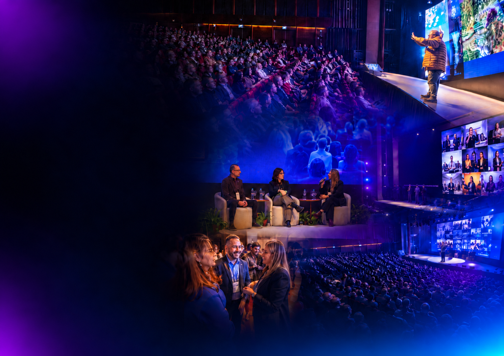

Movimento
Empreender40+
O maior movimento de empreendedorismo, protagonismo e transformação da geração 40+ do Brasil.
O mundo
mudou.
O empreendedor também.
Hoje, milhões de brasileiros vivem uma nova fase profissional após os 40 anos. Empresários, executivos, profissionais liberais e pessoas que decidiram empreender com toda a experiência acumulada ao longo da vida.
O Empreender 40+ nasceu para conectar, inspirar e desenvolver essa geração.
Não somos um evento.
Somos um movimento.
Uma marca.
Uma comunidade.
Presente o ano todo.
Summit, Caravana, Confrarias e conteúdo se conectam em diferentes momentos e formatos. Cada ponto de encontro amplia a mesma comunidade.
Summit
Ideias, negócios e futuros no mesmo palco.
02 / TERRITÓRIOCaravana
Conexões que percorrem o Rio Grande do Sul.
03 / ENCONTROConfrarias
Conversas próximas que fortalecem vínculos.
04 / HISTÓRIASCanal
Vozes e conhecimento que seguem na tela.
05 / IDEIASSite
Um espaço editorial para o próximo capítulo.
06 / PRESENÇARedes
O movimento vivo no dia a dia.
Summit Empreender 40+
A bagagem
vira avanço.
No total, as duas edições somaram dois dias de programação. Um encontro para movimentar ideias, negócios e futuros da geração 40+.

Dois encontros. Uma comunidade em movimento.
- 21
- palestrantes
- 12h+
- de conteúdo ao vivo
- 1.000+
- visitantes
- 20+
- veículos de comunicação
- 250 mil+
- pessoas alcançadas nas redes
Conexões
que percorrem.
Depois de consolidar o movimento em Porto Alegre, a Caravana leva conversas e oportunidades a empreendedores de diferentes regiões do Estado.
- 01Alegrete✦
- 02Pelotas✦
- 03Bento Gonçalves✦
- 04Santa Maria✦
- 05Passo Fundo✦
- 06Imbé✦
À mesa,
tudo acontece.
Encontros mensais em Porto Alegre para compartilhar conhecimento, fortalecer relacionamentos e abrir novas oportunidades.
por edição
Empresários, empreendedores e lideranças se encontram para conversas relevantes. A cada edição, um convidado especial conduz a troca.
- Conhecimento compartilhado
- Networking qualificado
- Relacionamento permanente
Conteúdo para continuar
O encontro
continua na tela.
Entrevistas, histórias inspiradoras, especialistas, empreendedores e tendências. O canal mantém viva uma biblioteca permanente de conhecimento para quem empreende após os 40.
Vídeos recentes
Selecione um episódio da lista.
- Carregando vídeos recentes…
Ainda há
muito para
construir.
O movimento conecta pessoas em diferentes momentos e formatos, com presença digital ativa durante todo o ano.
Uma plataforma para a geração 40+.
O site editorial está previsto para 2026/2027. Artigos, análises, entrevistas e discussões sobre empreendedorismo, negócios, carreira, comportamento e oportunidades vão ampliar a conversa para além dos eventos.
Conheça o siteConhecimento para decidir o próximo passo.
Experiência compartilhada por quem faz.
Presença, conexão e inspiração nas redes.
O futuro
se constrói
junto.
Entre para uma comunidade que transforma bagagem em novas ideias, negócios e caminhos.